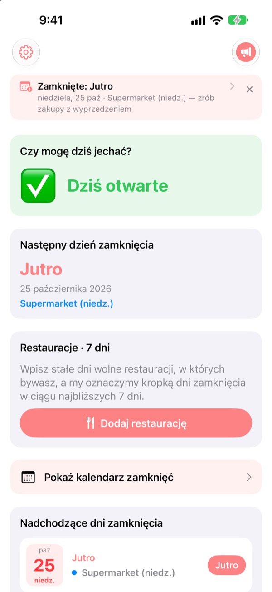
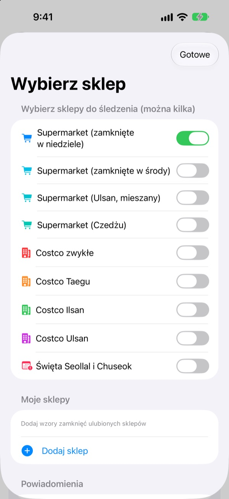
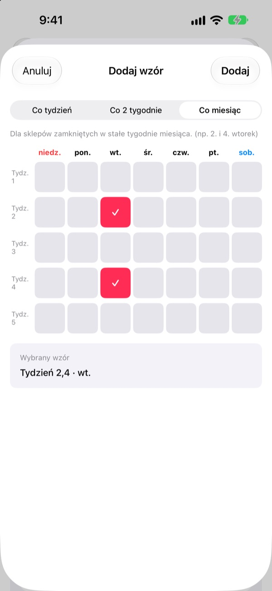
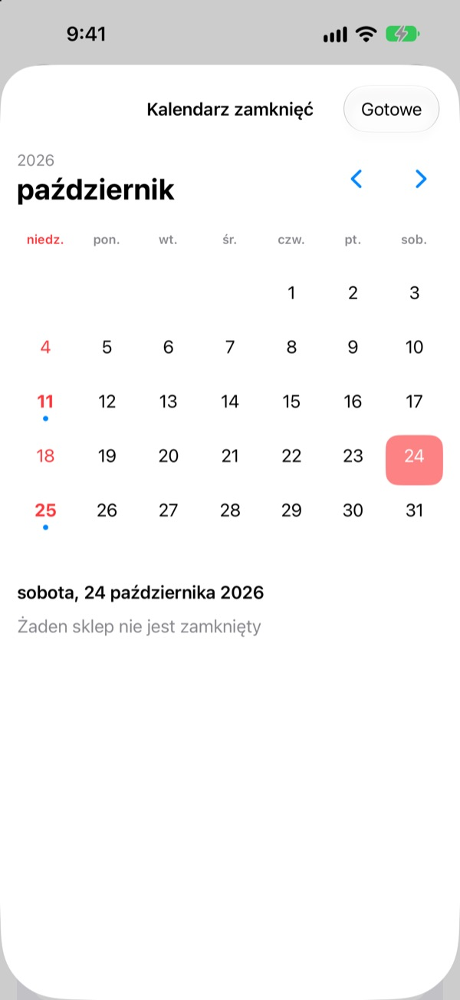
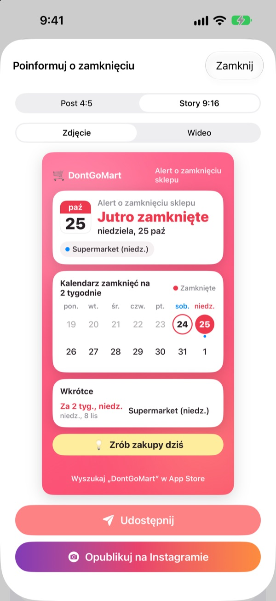

Zanim pójdziesz na zakupy,
sprawdź, czy jest otwarte
Po otwarciu aplikacji od razu widzisz, czy twoje sklepy są dziś otwarte. Przed każdym dniem zamknięcia przychodzi przypomnienie, więc już nie trafisz na zamknięte drzwi.
Wszystkie funkcje są darmowe. Bez konta i bez reklam.

Sprawdź na swoim sklepie
Wybierz sklep i od razu zobacz, czy jest dziś otwarty i kiedy następnym razem zamyka. Liczone według tych samych zasad co w aplikacji.
Zdarzyło ci się przyjść z listą zakupów pod zamknięty sklep?
Duże supermarkety w Korei muszą być zamknięte dwa dni w miesiącu, ale które, zależy od miejsca. Najczęściej druga i czwarta niedziela, gdzie indziej środa, a Ulsan i Czedżu mają własne zasady. W Costco zależy to od placówki. DontGoMart wylicza dni zamknięcia według zasad twoich sklepów i najpierw mówi, czy możesz iść dziś.
Trafnie w każdym regionie
Wybierz sklepy zamykane w niedzielę lub w środę albo regiony z własnym harmonogramem, jak Ulsan i Czedżu. Zwykłe placówki Costco oraz te w Taegu, Ilsanie i Ulsanie ustawia się osobno.
Widać też zamknięcia w sam dzień Seollal i Chuseok, a obserwować można kilka sklepów naraz.

Sklep za rogiem i ulubione restauracje
Jeśli sklepu nie ma na liście, dodaj go sam: co tydzień, co dwa tygodnie albo w które tygodnie miesiąca i w jaki dzień jest zamknięty.
Dla restauracji wklej link udostępniony z Naver Map albo wybierz zrzut ekranu jej strony, a stałe dni wolne uzupełnią się same. Tekst na zdjęciach jest odczytywany tylko na twoim urządzeniu.

Przypomnienia i widżety, żeby nie zapomnieć
Dostań przypomnienie 1, 2, 3 lub 7 dni wcześniej o wybranej godzinie, a dzień przed jeszcze jedno, że dziś dobry dzień na zakupy.
Widżety na ekranie początkowym i ekranie blokady pokazują najbliższe zamknięcie, czy w tę niedzielę jest otwarte i najbliższe siedem dni twoich restauracji. Kalendarz pokazuje cały miesiąc.

Udostępnij jedną kartą
Zamień informację w kartę z kalendarzem na dwa tygodnie i wskazówką zakupową i wyślij na rodzinny czat. Są formaty na post i relację na Instagramie oraz krótkie wideo.

Zaczynasz w trzech krokach
- 1
Wybierz sklepy
Włącz sklepy i regiony, w których robisz zakupy. Ile chcesz.
- 2
Włącz przypomnienia
Wybierz, ile dni wcześniej i o której godzinie.
- 3
Dodaj widżet
Sprawdzaj na ekranie początkowym lub ekranie blokady bez otwierania aplikacji.
Zasady zamknięcia według sklepu
- Supermarket (zamknięte w niedziele)
- 2. i 4. niedziela · większość regionów
- Supermarket (zamknięte w środy)
- 2. i 4. środa · część Gyeonggi, Cheongju
- Supermarket (Ulsan)
- 2. środa, 4. niedziela
- Supermarket (Czedżu)
- 2. piątek, 4. sobota
- Costco zwykłe
- 2. i 4. niedziela
- Costco Taegu
- 2. i 4. poniedziałek · Taegu, Taegu Innovation
- Costco Ilsan
- 2. i 4. środa
- Costco Ulsan
- 2. środa, 4. niedziela
- Seollal, Chuseok
- zamknięte w sam dzień święta
Obowiązkowe dni zamknięcia ustalają władze lokalne i mogą się zmienić. Jeśli coś się nie zgadza, napisz do nas na adres poniżej.
Najczęstsze pytania
Dni zamknięcia nie zgadzają się z rzeczywistością.
Obowiązkowe dni zamknięcia zależą od lokalnych przepisów i różnią się między regionami. Sprawdź w Ustawieniach, czy wybrany jest właściwy typ sklepu (zamknięte w niedziele, w środy, Ulsan, Czedżu itd.). Jeśli nadal się nie zgadza, wyślij nam nazwę sklepu i okolicę, a sprawdzimy.
Mojego sklepu nie ma na liście.
Dodaj go jako własny sklep. Wybierz co tydzień, co dwa tygodnie albo w które tygodnie miesiąca i w jaki dzień jest zamknięty, na przykład w drugą i czwartą niedzielę.
Dni wolne restauracji uzupełniły się źle.
Przy imporcie z linku Naver Map strona restauracji musi podawać stałe dni wolne. Przy zrzucie ekranu zadbaj, żeby informacja o zamknięciu była widoczna. Wszystko możesz poprawić przed zapisaniem.
Nie dostaję przypomnień.
Sprawdź, czy powiadomienia są dozwolone w Ustawienia > Powiadomienia > DontGoMart i czy przypomnienia są włączone w aplikacji.
Widżet się nie odświeża.
Otwórz aplikację raz, a widżety się odświeżą. Jeśli to nie pomoże, usuń widżet i dodaj go ponownie.
Czym są napiwki?
Wszystkie funkcje DontGoMart są darmowe. Kawa, ciasto i obiad to napiwki dla twórcy. Potem zobaczysz podziękowanie i odznakę z liczbą przesłanych napiwków.
Gdzie pytać o płatności lub zwroty?
Zakupy w aplikacji obsługuje Apple, więc o zwrot prosisz na reportaproblem.apple.com. W innych sprawach napisz do nas.
Jak są traktowane moje dane?
Bez kont, reklam i narzędzi śledzących, a tekst na zrzutach ekranu jest odczytywany tylko na twoim urządzeniu. Szczegóły w polityce prywatności poniżej.
Pytania lub pomysły? Napisz na hyunho.lee.1993@gmail.com. Zwykle odpowiadamy w ciągu dnia lub dwóch.